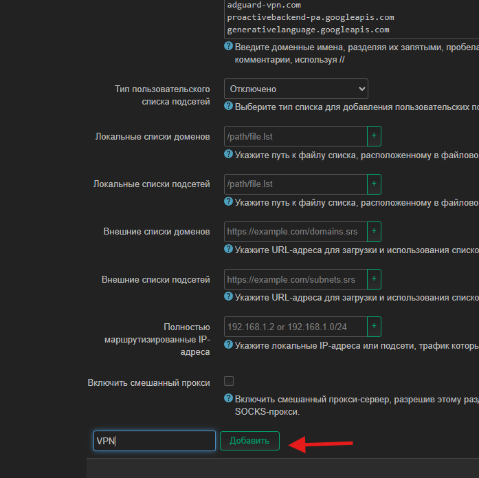
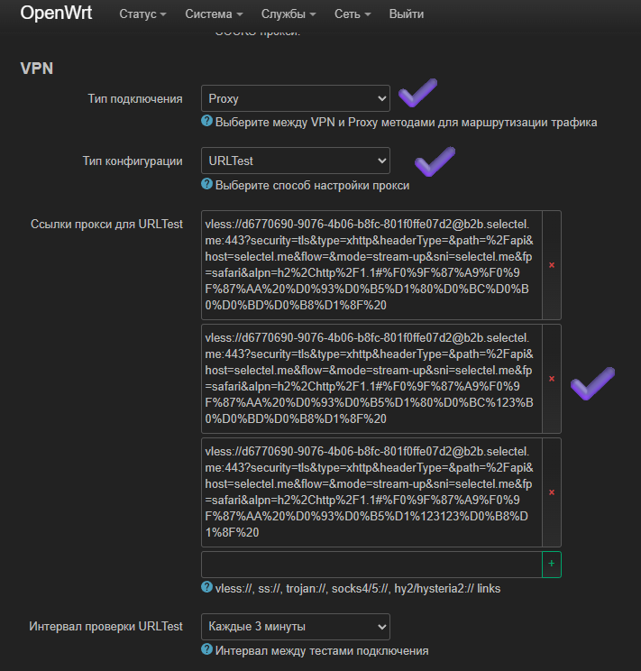

При необходимости подключите устройство по LAN кабелю (например, в порт LAN1).
Откройте в браузере http://192.168.1.1.
Логин: root, пароль: 12345678.
Как поменять тип подключения
Перейдите в Сеть → Интерфейсы.
Откройте настройки интерфейса WAN.
Выберите протокол PPPoE и введите логин/пароль от провайдера.
Нажмите Сохранить, затем Применить.
Проверьте, что интернет-подключение стало активным.
DHCP: не открывается страница логина провайдера
Позвоните провайдеру и сообщите, что вы заменили роутер. Обычно нужно обновить MAC-адрес на стороне провайдера.
Как поменять название Wi‑Fi и пароль
Откройте Сеть → Беспроводная сеть.
Нажмите Изменить для 2.4G и 5G сетей.
Измените имя сети (SSID) и пароль.
Сохраните и примените настройки.
Как добавить свой сайт в обход
Перейдите в Службы → podkop → Секции.
В разделе «Тип пользовательского списка доменов» выберите Текстовый список.
Добавьте домены в формате ya.ru (без https://).
Примените изменения. Если нужно, перезапустите podkop в разделе «Диагностика».
Если сайт не открывается сразу, проверьте в режиме инкогнито или в другом браузере.
Как перезапустить AdguardVPN
Откройте командную строку (Win + R → cmd).
Подключитесь к роутеру: ssh root@192.168.1.1.
При запросе ключа введите yes, затем пароль роутера.
Запустите команду:
/opt/adguardvpn_cli/adguardvpn-cli connect -l PL
После выполнения команду можно закрыть.
Как заменить изначальную настройку и поставить свой VPN
Откройте Службы → podkop → Секции.
В секции main у вас из коробки стоит AmneziaVPN под блок РКН. Эту секцию не меняем, а добавляем новую. Вам нужно опуститься в самый низ и добавить новую секцию "VPN".
Выберите тип подключения Proxy.
Заполните параметры своего VPN (например, VLESS).
Примените изменения.
Как добавить несколько кофигрураций VLESS VPN?
Откройте Службы → podkop → Секции.
Создаем новую секцию VPN или используем уже существующую.
Выберите тип подключения Proxy.
Тип конфигурации указываем URLTest для автоматического выбора локации с наименьшей задержкой. Для ручного выбора ставим тип Selector.
Вставляем конфигурации VLESS (либо другой протокол из доступных) по очереди в поле Ссылки прокси для URLTest.
Выставляем параметр Интервал проверки URLTest, который отвечает за частоту опроса пинга локаций.
Примените изменения.


Перестал работать YouTube, Instagram и другие сайты в блоке
В случае, если у пропал доступ к сайтам YouTube, Instagram и другим заблокированным РКН, вам нужно попробовать обновить конфиг AmneziaVPN. Как это сделать ниже.